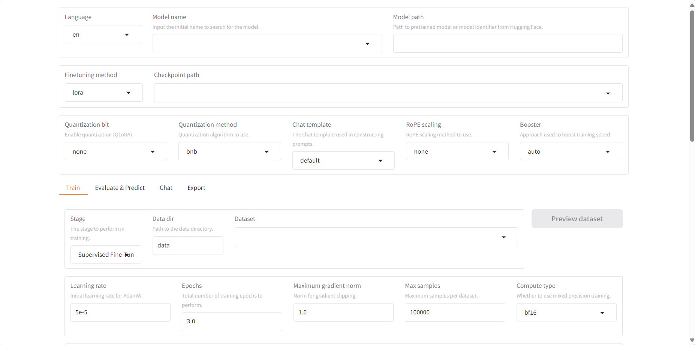
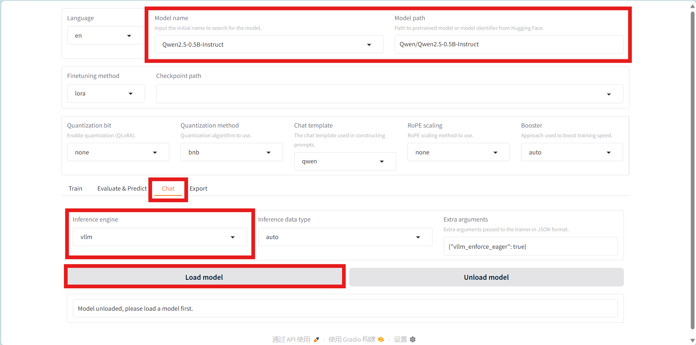
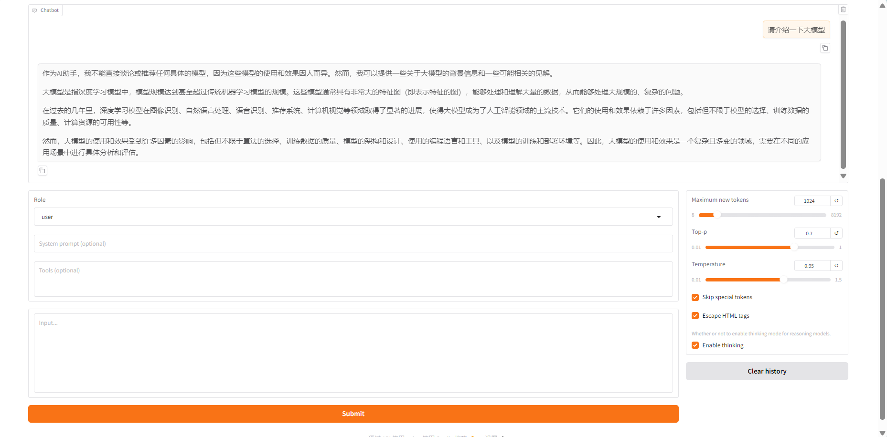

NPU推理
vLLM-Ascend安装
使用下述命令安装 vLLM-Ascend 。
# Install vllm-project/vllm from pypi
pip install vllm==0.8.5.post1
# Install vllm-project/vllm-ascend from pypi.
pip install vllm-ascend==0.8.5rc1
LLaMA-Factory安装
使用下述命令安装 LLaMA-Factory 。
git clone --depth 1 https://github.com/hiyouga/LLaMA-Factory.git
cd LLaMA-Factory
pip install -e .
pip install -r requirements/npu.txt --no-build-isolation
pip install -r requirements/metrics.txt --no-build-isolation
推理测试
可视化界面
使用下述命令启动LLaMA-Factory的可视化界面。
llamafactory-cli webui
浏览器访问到如下界面则项目启动成功。

选择模型并切换到chat模式并将推理引擎修改为vLLM，然后点击加载模型。

加载完成后可以进行对话。

性能对比
硬件：Ascend 910B1 ✖ 2
模型名称 |
vLLM |
Hugging Face |
速度提升比 |
|---|---|---|---|
qwen2.5-0.5B |
22.7 tokens/s |
10.9 tokens/s |
108.3% |
qwen2.5-7B |
20.2 tokens/s |
9.9 tokens/s |
104.0% |
在推理性能上。vLLM框架比huggingface的推理速度提升了超过一倍。